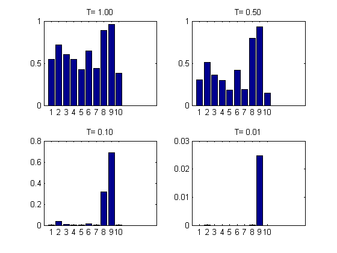

Anneal a histogram to illustrate the effect of temperature
setSeed(0); a = rand(10,1); subplot(2,2,1) T=1;bar(a.^(1/T)); title(sprintf('T=%5.2f', T)); subplot(2,2,2) T=0.5;bar(a.^(1/T)); title(sprintf('T=%5.2f', T)); subplot(2,2,3) T=0.1;bar(a.^(1/T)); title(sprintf('T=%5.2f', T)); subplot(2,2,4) T=0.01;bar(a.^(1/T)); title(sprintf('T=%5.2f', T));